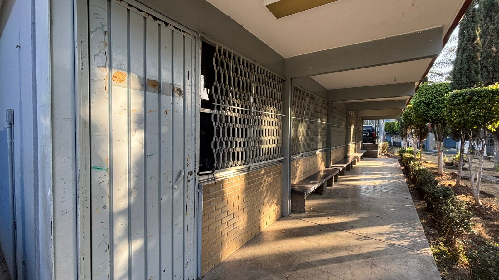

¿Qué es y que hacemos?⚙️
Los alumnos se aproximarán a la comprensión e intervención de la realidad para analizar los objetos técnicos y las interacciones que se establecen entre la innovación técnica y los aspectos sociales y naturales, de manera que puedan intervenir de forma responsable e informada en el mundo tecnológico, actual y futuro.
Los alumnos contaran con la habilidades y destrezas en el entendimiento de los ‹ objetos técnicos que los rodea llevándo a cabo una responsable toma de decisión, intervención y gestión para la resolución de problemas para su vida y su relación con la naturaleza y sociedad.

Ahora se mostrara un trabajo realizado por el taller de ofimatica


 ⬅ Volver al Inicio
⬅ Volver al Inicio